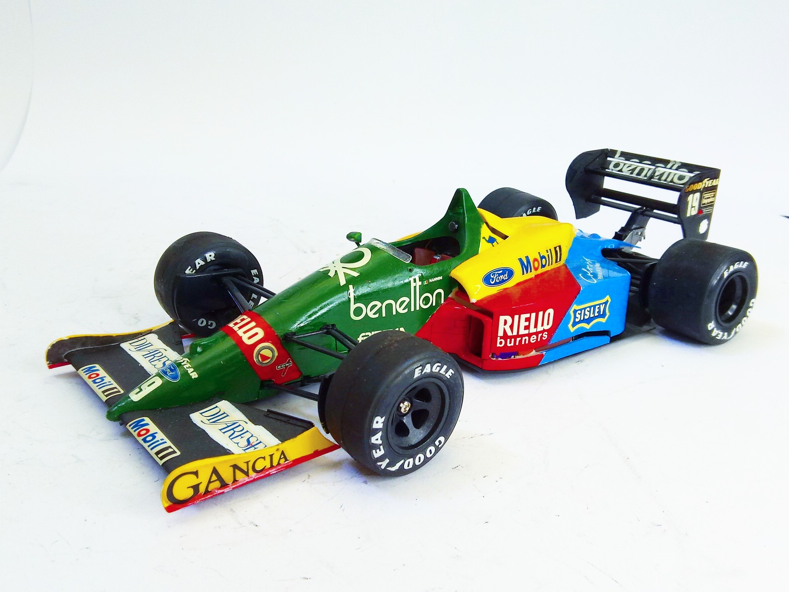

Auto e veicoli stradali · scale model archive
Benetton Ford B188
Benetton Ford B188 — Kit: Tamiya. Scale 1/20 Raced in 1988 F1 championship Unfortunately not the correct green hue I´m afraid #1/20 #Tamiya

Photo gallery
English description
Scale 1/20
Raced in 1988 F1 championship
Unfortunately not the correct green hue I´m afraid
#1/20 #Tamiya
Descrizione italiana
Corse nel 1988 F1 championship.
Unfortunately not il correct green hue I'm afraid.